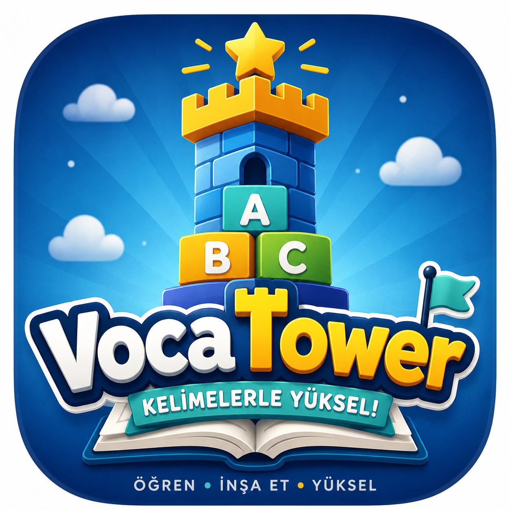
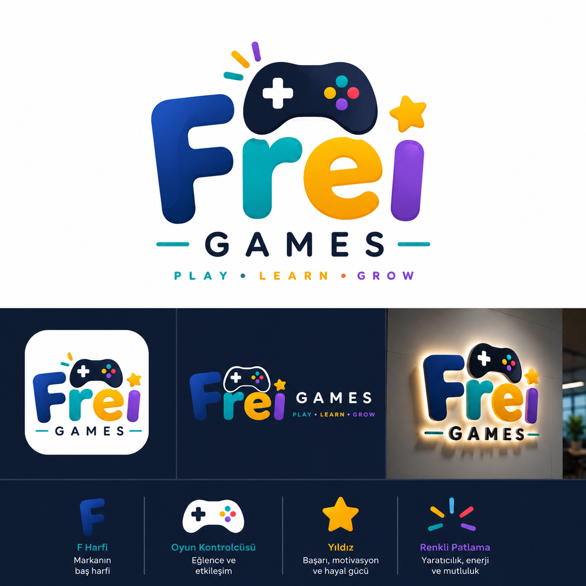

VocaTower
VocaTower hakkında merak ettiklerin
🔐 Hesap oluşturmam gerekiyor mu?
Hayır. VocaTower'ı oynamak için hiçbir hesap oluşturmana ya da kayıt olmana gerek yok. Sadece bir kullanıcı adı ve avatar seçmen yeterli.
💾 İlerlemem nasıl saklanıyor?
Tüm ilerlemen (XP, kule katların, altının, rozetlerin) tarayıcının yerel depolama alanında (localStorage) cihazında saklanır. Hiçbir sunucuya gönderilmez. Aynı tarayıcıyı ve cihazı kullandığın sürece ilerlemen kalır; tarayıcı verilerini temizlersen ya da farklı bir cihaz/tarayıcı kullanırsan ilerlemen görünmez.
🧑🎨 Kullanıcı adımı ya da avatarımı nasıl değiştiririm?
Oyun içinde üst çubuktaki ⚙️ (ayarlar) butonuna dokun. Açılan ekrandan yeni bir kullanıcı adı yazabilir ya da yeni bir avatar seçebilirsin. Bunu yapmak XP'ni, altınını, kule ilerlemeni ya da rozetlerini sıfırlamaz.
🪙 Altın nasıl kazanılır?
Herhangi bir oyun modunu tamamladığında altın kazanırsın: tamamlama için temel bir ödül, hatasız/mükemmel bir tur için ekstra bonus ve günün ilk oyunu için ayrı bir bonus. Kazandığın altın, oyun sonuç ekranında ayrıntılı olarak gösterilir.
🏅 Rozetler nasıl çalışır?
Üst çubuktaki 🏅 butonuna dokunarak Rozetlerim ekranını açabilirsin. Rozetler; belirli sayıda doğru cevap verme, kule katları tamamlama, belirli oyun modlarını oynama ve daha fazla ilerleme hedefine ulaştığında otomatik olarak açılır. Her rozet ek bir altın ödülü de verir.
🐞 Bir sorunu nasıl bildiririm?
Bir hata bulduysan ya da önerin varsa, lütfen bize e-posta gönder: support@vocatower.com. Karşılaştığın ekranı ve ne yaptığını kısaca anlatman bize çok yardımcı olur.
✉️ İletişim
Her türlü soru ve geri bildirim için: support@vocatower.com